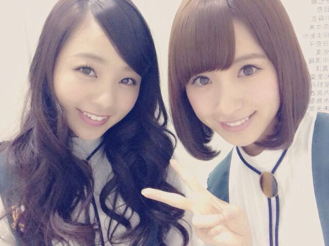
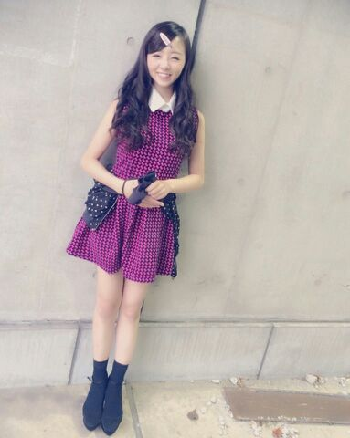

| 2014/11 04 Tue | ２日間 握手会..* かわむら まひろ |
こんばんわ..*
ろってぃーだよ？ まにだよ？
皆、 今日も１日お疲れ様ね


ろってぃー みさだよ♪
今日はこのペアで 握手会でした*´`*
Rotty夢☆の皆さん、
みさみさーくるの皆さん、
初めましての方、皆今日は本当にありがとう！
沢山の方とこうやって目を見ながら握手してお話できるって本当に幸せ〜 って思いましまた..*
みさとこうやって 2人で握手会するのは初めてです。
だから 初めましてのみさみさーくるさん方と仲良くなることができて嬉しゅうキモチになりましたよん。。。
ろってぃーの歌とダンスは乃木坂を引っ張ってくれてるよ〜。とか
ろってぃーがいないliveは何か物足りない。とか・・・
みさが 元々アンダーメンバーに居たのもあって
みさ推しの方はアンダーライブにきてくれてたんだよね(/*´А`)/？
推しはいないアンダーライブなのに
そうやって私のことをちゃんと見てくれること、本当に嬉しい。
本当にありがとう(/-＼*)
そしてそして昨日は
個別握手会とゆうことで私服でした〜(ノ´∀｀*)..*
今回のまにふぁっしょん


ぴょん。
ピンクと紺色の面白可愛い柄だよ..*
どうですか〜*´`*?
肌寒いから薄手のん羽織ってたけど
脱いだらこんな感じです..*
まに笑顔。

ノースリーブ。。きゃっ
いつも 「ろってぃーの洋服どこの〜？」って聞かれるから先に載せようと思ったんだけどね、
まさかのワンピースに何も書いていなかった・・・へへ
これは 裏原宿の洋服屋さんで買ったよ〜*
ではでは こんな感じですかね〜(ノ´∀｀*)
そしたらまたblog更新しますね！
皆ありがとう.♪
大好きだよ〜(*ノ▽ノ)らぶ。
コメント(298)
2014/11/04 00:30